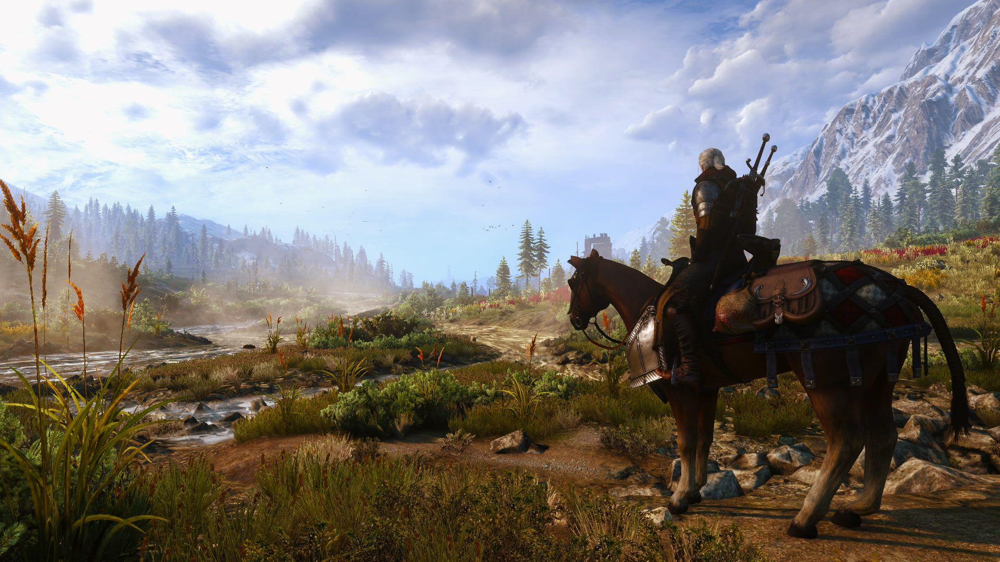

Half-Life
Seria strzelanek pierwszoosobowych o tematyce fantastycznonaukowej stworzonych przez Valve Corporation. Seria opowiada o fizyku Gordonie Freemanie, który początkowo pracuje dla Black Mesa Research Facility. Po wybuchu w laboratorium do świata przedostają się obce istoty z obcego wymiaru Xen. Jedna z moich ulubionych serii gier, half life jedynka to oczywista klasyka, a Barney nadal nie kupił Gordonowi piwa D:

Portal
Seria platformowych gier logicznych, których akcja osadzona została w uniwersum cyklu Half-Life. Marka cieszy się dużą popularnością i należy do najważniejszych w portfolio wydawniczym korporacji Valve. W Portalu gracze śledzą perypetie Chell, która poddana zostaje serii ryzykownych testów w opustoszałym kompleksie badawczym - Aperture Science Enrichment Center. Rolę czarnego charakteru odgrywa psychopatyczna sztuczna inteligencja GlaDOS, odpowiedzialna za wymordowanie pozostałych pracowników ośrodka.

Wiedźmin
Seria gier komputerowych i mobilnych stworzona przez studio CD Projekt Red na motywach Sagi o wiedźminie autorstwa Andrzeja Sapkowskiego. Składa się z trzech gier głównych oraz kilku spin-offów. Seria ta przedstawia perypetie wiedźmina Geralta z Rivii, a sama akcja trylogii zaczyna się pięć lat po wojnie Królestw Północnych.
Hades
Gra z gatunku rouge-like opracowana przez studio Supergiant Games. Wcielamy się w niej w Zagreusa - ukrywanego syna Hadesa i Persefony, który wbrew woli jego ojca - desperacko próbuje wydostać się z mitycznego greckiego świata zmarłych i dostać się na olimp.